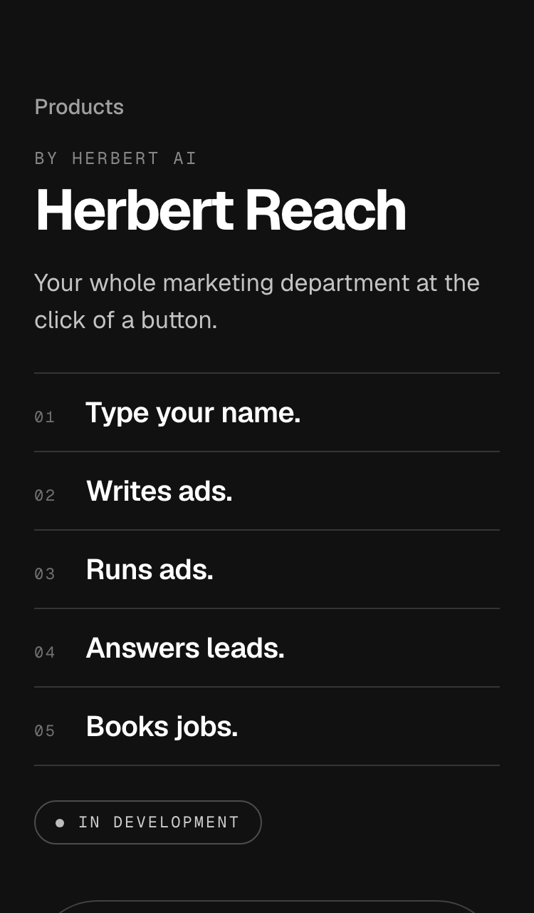
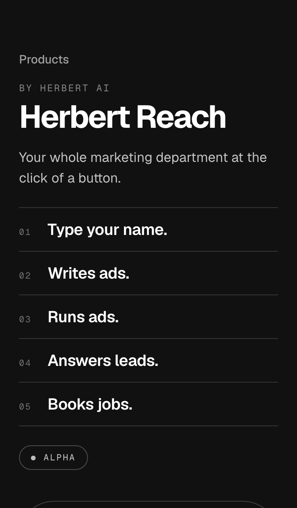
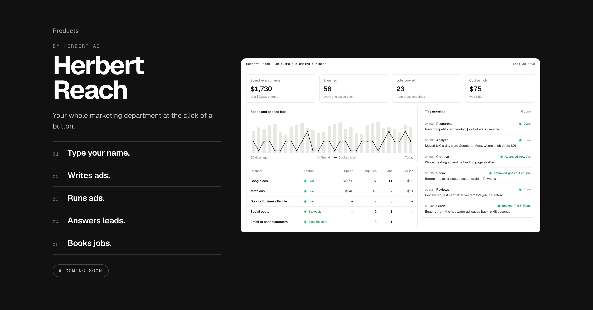

Details 4 and 5 of 6 together. The early-access note and the link are gone; a status label sits where the link was, a grey dot because grey means not live yet on this site. Built with In development; the other two are swapped in the page.


